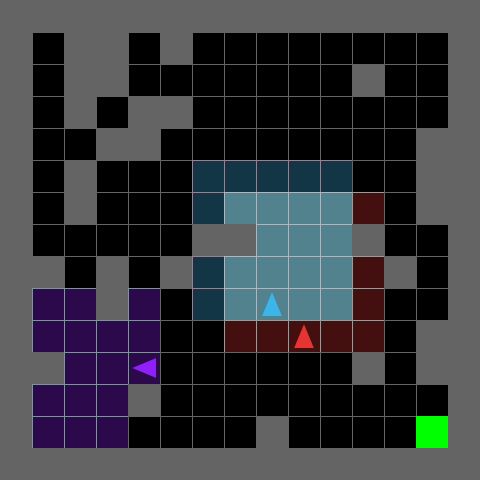
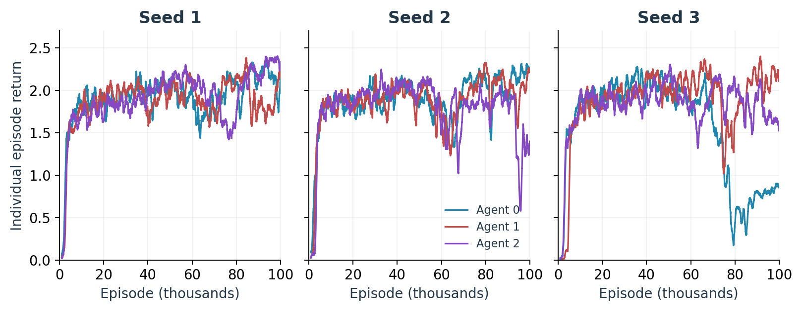

flowchart TB
ENV["MultiGrid environment"]
MC["MultiAgent controller"]
A0["PPOAgent 0"]
A1["PPOAgent 1"]
A2["PPOAgent 2"]
MC -->|"[a₀, a₁, a₂]"| ENV
ENV -->|"[o₀, o₁, o₂], [r₀, r₁, r₂], done"| MC
MC -->|"o₀, r₀"| A0
MC -->|"o₁, r₁"| A1
MC -->|"o₂, r₂"| A2
A0 -->|"a₀"| MC
A1 -->|"a₁"| MC
A2 -->|"a₂"| MC
I trained three independent PPO agents to navigate a shared gridworld. Each agent had to find a route around walls to the goal. They could also get in each other’s way.
I wanted to understand how far this simple arrangement would get. The first run ended with all three agents earning comparable returns. Two further runs made the picture more interesting: all three agents learned, but substantial late declines affected different agents in each repeat.
This post follows the implementation, compares the three learning trajectories, and examines a recorded episode from the third run.
1 Why start with independent PPO?
I find it helpful to think about policy learning in terms of a repeated decision: given what the agent can see, which actions should become more likely? The policy produces a distribution over actions. The critic estimates future discounted reward, giving the learner a reference for judging the actions it sampled. An advantage estimate then supplies the direction of the policy update.
PPO collects a batch of experience and takes several optimization passes over it. To keep track of how the policy is changing, it compares the probability of each sampled action under the current policy with its probability during collection. The clipped objective limits the benefit of pushing that ratio farther in the direction favored by the estimated advantage.
Adding other learning agents changes what an action leads to. A forward move that worked earlier might now meet another agent taking a different route. Each learner therefore encounters an environment whose behavior changes as its neighbors learn.
Independent PPO (IPPO) keeps the learning problem simple: each agent learns from its own observations and rewards, treating the others as part of the environment. In my implementation, each has separate policy and value networks, an optimizer, and a rollout buffer. The original IPPO study on StarCraft made this a useful starting point: independent learners performed competitively on that benchmark despite the challenges of simultaneous learning. Here, I wanted to see what the same basic approach would do in a much smaller world.
2 What the agents observe and earn

The task is MultiGrid-Cluttered-Fixed-15x15. It contains three agents, a fixed goal, and fixed walls. Starting positions and headings vary across episodes. Each episode lasts 100 environment steps, with one action per agent at each step. The environment randomizes the order in which those actions execute.
Each learner receives its own 5×5 egocentric observation and the headings of all three agents. The observation is a symbolic array encoding object type, color or agent identity, and state. The partial-view images visualize that encoding; the full arena is rendered from the environment’s true state.
There are seven actions. Left, right, and forward provide navigation; the object-interaction actions and wait consume a step without changing objects on this map. An agent cannot enter a cell occupied by another agent, so they can block one another’s movement. They remain visible objects in one another’s observations, and walls occlude vision.
Reaching the goal gives
\[ r_t = 1 - 0.9\frac{t}{100}, \]
where \(t\) is the current episode step. After reaching the goal, the agent respawns and continues until step 100, allowing multiple goal visits per episode.
I report the sum of rewards within an episode as episode return, and the sum of the three agents’ episode returns as collective return. Each learner optimizes its own reward. Episode return reflects both how often and how early an agent reaches the goal; collective return summarizes these rewards across the three agents.
3 Turning PPO into three learners
I used CleanRL’s PPO implementation as the starting point. Its collection and update code was easy to follow and move into a class. The project skeleton supplied the environment, CNN architecture, metacontroller structure, and video visualizer. I filled in the training loop and implemented a PPOAgent class, adapting CleanRL’s collection and update logic so that each learner maintains its own PPO state.
Here aᵢ is an integer action in 0…6, rᵢ is a scalar reward, and done is a shared Boolean. Each oᵢ contains an image array of shape (5, 5, 3) and dtype uint8, plus a direction array of shape (3,).
PPOAgent contains the action sampler, rollout storage, advantage calculation, and optimization. MultiAgent collects the three actions, advances the world once, and routes each reward to the learner that earned it.
Each agent uses separate copies of the provided MultiGridNetwork for actor and critic. A CNN encodes its local view, a small fully connected branch encodes the headings, and the combined features feed an output head. The actor produces seven logits; the critic produces one value estimate. Separate actor and critic networks follow the CleanRL reference used here.
3.1 Keeping collection and updates aligned
I split transition collection into two calls. act() records the observation, action, log probability, and value estimate. After the joint environment step, store_reward() completes the entry. The training loop is approximately:
state = env.reset()
done = False
while not done:
actions = self.get_actions(state, store=train)
next_state, rewards, done, _ = env.step(actions)
if train:
for i, agent in enumerate(self.agents):
agent.store_reward(rewards[i])
self.next_done = done
if train:
self.update_models(next_state, done)
state = next_stateAll three buffers fill together. Each holds 128 transitions, so updates often occur inside a 100-step episode. Buffers also span resets. The stored done flags identify where an observation follows an episode boundary, allowing advantage estimation to stop at the correct transition.
For an unfinished episode at the end of a rollout, I bootstrap from the critic’s estimate of the next observation. Within the rollout, generalized advantage estimation combines temporal-difference residuals backward through time:
\[ \delta_t = r_t + \gamma m_t V(o_{t+1}) - V(o_t), \qquad \hat A_t = \delta_t + \gamma\lambda m_t\hat A_{t+1}. \]
Here \(m_t\) is zero at an episode-ending transition and one otherwise. In this implementation, the 100-step boundary ends the finite-horizon task. The regression target is \(\hat A_t + V(o_t)\).
The update uses stored behavior-policy log probabilities to keep the denominator of PPO’s probability ratio fixed.
3.2 The update settings
I retained the main PPO loss and optimizer settings from CleanRL.
| Setting | Value |
|---|---|
| Rollout length per agent | 128 transitions |
| Optimization per rollout | 4 epochs, 4 minibatches per epoch |
| Minibatch size | 32 transitions |
| Constant Adam learning rate / epsilon | 0.00025 / 0.00001 |
| Discount \(\gamma\) / GAE \(\lambda\) | 0.99 / 0.95 |
| PPO clip coefficient | 0.2 |
| Entropy / value-loss coefficient | 0.01 / 0.5 |
| Maximum gradient norm | 0.5 |
| Advantage normalization | Within each minibatch |
| Value regression | Clipped value loss |
Adam updates the actor and critic parameters together through one optimizer per agent. The entropy term encourages a less concentrated action distribution.
4 Three training runs
I trained with learner seeds 1, 2, and 3 in a single shared environment for a nominal 100,000 episodes each, or 10 million environment steps per run. The layout and hyperparameters stayed fixed. These seeds control the learners; the original environment reseeds starting placement from wall-clock time, so the runs do not form a fully controlled seed comparison.
Seed 3 took 6 h 55 min 56 s on an Apple M1 Pro MacBook Pro with 16 GB memory, using CPU execution.
4.2 Similar peaks lead to different final returns
The table summarizes the last 2,000 training episodes as mean ± sample standard deviation across episodes. Policies continued updating throughout this interval.
| Return | Seed 1 | Seed 2 | Seed 3 |
|---|---|---|---|
| Agent 0 | 1.98 ± 0.80 | 2.25 ± 0.76 | 0.88 ± 0.51 |
| Agent 1 | 2.16 ± 0.72 | 2.21 ± 0.71 | 2.13 ± 0.78 |
| Agent 2 | 2.35 ± 0.70 | 1.36 ± 0.71 | 1.58 ± 0.62 |
| Collective | 6.49 ± 1.36 | 5.82 ± 1.38 | 4.60 ± 1.12 |
The trajectories differ in how much of their earlier performance they retain. Seed 1 recovers from its middle-training decline and reaches its best 1,000-episode mean, 6.75, near the end. Seed 2 reaches 6.48 around episode 77,390 and finishes at 5.86 on the same rolling measure. Seed 3 peaks at 6.48 around episode 50,817, then finishes at 4.51.
4.3 Individual agents account for the late losses

Seed 3’s largest sustained loss belongs to agent 0. Its mean return falls from 2.07 over episodes 40k–50k to 0.61 over 80k–90k, before recovering partially to 0.88 in the final 2,000 episodes. Over those same two 10,000-episode intervals, collective return falls from 6.17 to 4.41, with agent 0 accounting for most of the drop. Agent 1 remains comparatively strong, finishing at 2.13, while agent 2 finishes at 1.58.
Seed 2’s late weakness is concentrated in agent 2, which finishes at 1.36 while the other two agents exceed 2.2. Seed 1 ends with all three agents between 1.98 and 2.35. The aggregate curves therefore conceal an important difference: a lower collective return can reflect a substantial loss by one learner while the others continue earning rewards.
Why does a different agent fall behind in each repeat? Perhaps early successes lead the learners toward different routes, leaving one more vulnerable when its neighbors change behavior. Ordinary PPO variability could also produce this pattern. Comparing trajectories before and after a decline might make that distinction more tangible.
6 Designing the next experiments
6.1 A controlled test of the decline
The most interesting result is the gap between learning a useful policy and retaining it. A cleaner experiment would separate three sources of variation: network initialization, starting positions, and action sampling. Each would have its own recorded random seed, replacing the environment’s wall-clock reseeding. Checkpoints taken at fixed training intervals would then be evaluated on the same held-out starting configurations, with several action-sampling repeats per configuration. Per-agent returns, goal counts, and time spent without moving would show whether a decline is widespread or concentrated in a few difficult starts.
To test whether changing neighbors contribute to the decline, training could branch from the same checkpoint: one branch continues updating all three agents, while the other updates one learner with its two neighbors frozen. Repeating this comparison for each agent and across learner seeds would test whether removing co-agent updates reduces the loss. Recording blocked moves separately for walls and agents would help connect any difference to physical interference. The evaluation episodes would be specified in advance, independent of clips selected for illustration.
6.2 Recent studies and next directions
The agents face the same navigation problem, yet their learning trajectories diverge. That makes parameter sharing a natural next comparison. HyperMARL (2025) explores a flexible form of sharing: agent-conditioned hypernetworks generate individual actor and critic parameters, allowing common learning alongside specialization. Here, comparing separate and fully shared networks would establish a baseline before trying that approach. Critic information is another variable to isolate: the contrasting results in the original IPPO and later MAPPO studies make it an empirical question for this task.
The videos also raise a question about what successful navigation demonstrates. Probing Dec-POMDP Reasoning in Cooperative MARL (2026) examines how reactive and recurrent policies use other agents’ actions and histories, distinguishing dependence from evidence of causal influence. Repeated goal visits in this arena show useful navigation, but do not establish coordination. A variant requiring one agent to hold a passage open for another would make cooperation necessary. Measuring successful handoffs alongside returns would then give a comparison of reactive and recurrent policies a concrete behavioral target.
References
Algorithms
- Schulman et al. (2017). Proximal Policy Optimization Algorithms. arXiv:1707.06347.
- Schulman et al. (2016). High-Dimensional Continuous Control Using Generalized Advantage Estimation. ICLR 2016; preprint first posted in 2015.
- Schroeder de Witt et al. (2020). Is Independent Learning All You Need in the StarCraft Multi-Agent Challenge?. arXiv:2011.09533.
- Yu et al. (2022). The Surprising Effectiveness of PPO in Cooperative Multi-Agent Games. NeurIPS 2022, Datasets and Benchmarks.
Implementation and tutorials
- Huang et al. (2022). CleanRL: High-quality Single-file Implementations of Deep Reinforcement Learning Algorithms. Journal of Machine Learning Research, 23(274), 1–18. PPO implementation.
- Huang, Dossa, Raffin, Kanervisto, and Wang (2022). The 37 Implementation Details of Proximal Policy Optimization. ICLR Blog Track.
- OpenAI. Proximal Policy Optimization. Spinning Up documentation.
Recent experiments and architectures
- Tessera, Rahman, Storkey, and Albrecht (2025). HyperMARL: Adaptive Hypernetworks for Multi-Agent RL. NeurIPS 2025.
- Tessera, Hinckeldey, Zamboni, Abel, and Storkey (2026). Probing Dec-POMDP Reasoning in Cooperative MARL. AAMAS 2026.